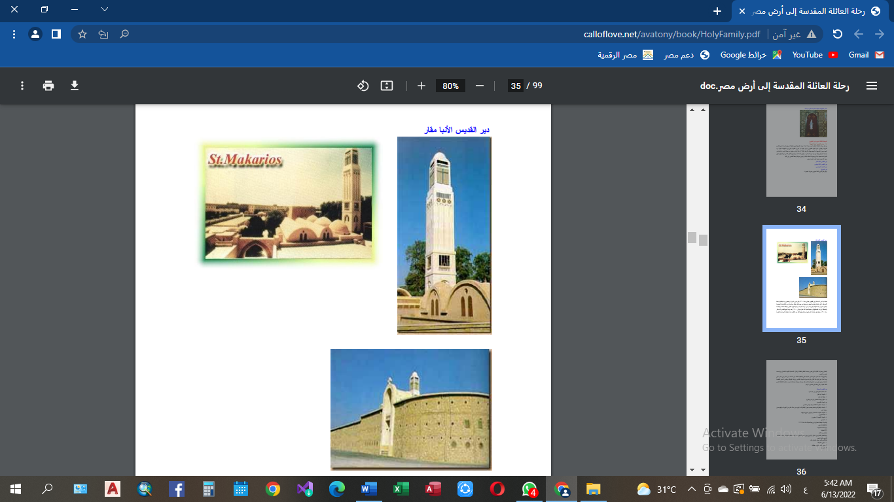

وادي النطرون
بعد ان تركت العائله المقدسه مدينه سخا عبرت الفرع الغربي للنيل ( فرع رشيد ) و اجتازو بوادي النطرون الذي كان يدعي ( بريه شيهيت ) فبارك رب المجد يسوع المسيح له المجد جهاته الأربعة وقال "أن هذا الوادى سيكون به جملة أديـرة وكنـائس يعمرها الرهبان وكل من يود أن يخدم الرب". وهو الآن يضم أربعة أديرة عامرة وهى :- 1- دير القديس الانبا مقار 2- دير السريان 3- دير القديس الانبا بيشوي 4 - دير العذراء البراموس
دير الانبا مقار
حينما بدأ دير أنبا مقار فى الظهور حوالى سنة ٣٦٠ م كان بدون أسوار أو حصون، بدأ بقلاية ( مكان للعباده ) واحدة لأنبا مقار التى بناها فى طرف الصخرة وحولها من بعيد كانت هناك عدة مئات من القلايـات المبنيـة بالطوب النىء والمسقوفة بالجريد ثم بدىء ببناء كنيسة، ومعها ظهرت قلالى مرافقة للمائدة وللخدمة وللضيافة وإزداد العدد فبلغ قرب نهاية حياة أنبا مقار حوالى ٢٤٠٠ راهب ولما تنيح القديس أنبا مقار سنة ٣٩٠ م ودفن فى مغارته التى أحبها وعاش فيها أكثر من ثلاثين عاماً ارتبطت الجماعـة كلهـا بالمكان وصارت القلاية التى تحوى جسده الطاهر نقطة الإرتكاز الأساسية لتثبيت المكـان وإسـمه على مر الدهور.
وأصبح جسد أنبا مقار ذخيرة الدير الثمينة التى يتناقلها الخلف عن السلف، من عصر إلى عصر حتى يومنا هذا. فمن أجل هذا الكنز وكرامة سيرته شيدت الكنائس وزينت الهياكل، وبقـى الـدير كقلعـة شامخة، يحكى على مدى السنين قصة أنبا مقار ونسكه وعبادته وأمانته لسيده، والنعمة الفائقة التـى كانت عليه، والتى بلغت إلى مستوى الرسل.

وأصبح جسد أنبا مقار ذخيرة الدير الثمينة التى يتناقلها الخلف عن السلف، من عصر إلى عصر حتى يومنا هذا. فمن أجل هذا الكنز وكرامة سيرته شيدت الكنائس وزينت الهياكل، وبقـى الـدير كقلعـة شامخة، يحكى على مدى السنين قصة أنبا مقار ونسكه وعبادته وأمانته لسيده، والنعمة الفائقة التـى كانت عليه، والتى بلغت إلى مستوى الرسل.

دير القديس الانبا مقار
اهم الاثار في دير ابو مقار
كنيسة الانبا مقار
هيكل الانبا مقار
هيكل يوحنا المعمدان
كنيسة الشهداء التسعه واربعون
اجساد القديسين
اجساد البطاركه وعددهم 16 بطريك
قبة الميرون
الحصن
المكتبه
المائده الجديده

المدخل المؤدى إلى كنائس دير أبو مقار بوادى النطرون
دير الانبا بيشوي

ويقع فى المنطقة الوسطى من وادى النطرون. وقد أسسه الأنبا بيشوى قبل أن يقوم البربـر بالغـارة الأولى على برية شيهيت سنة ٤٠٧ م، وتنيح القديس الأنبا بيشوى فى ٨ أبيب ( احد الشهور القبطيه ) سنة ٤١٧ م. وقد قام قداسة البابا شنوده الثالث بنهضة معماريـة كبيـرة بهـذا الدير.
دير العذراء البراموس

من الناحية الشمالية، وهو يقع شمال غرب برية شيهيت. وكلمة براموس كلمة يونانية معناها الروم، ويقصد بذلك مكسيموس ودوماديوس أولاد الإمبراطور فلنتيان ، وقد تنـيح سـنة ٣٨٤ مكاريوس على موضع و بني الانبا مكاريوس علي موضع سكانهم هذا الدير.
دير السريان
هذا هو أصغر أديرة وادى النطرون، ويقع بالقرب من دير الأنبا بيشوى ويعرف بدير السيدة العـذراء السريان، ولا يعرف مؤسسه. ولكنه كان موجوداً فى القرن الرابع، وتوجد بـه شـجرة (مـار افـرام السريانى).
وهكذا واصلت العائلة المقدسة سيرها جنوباً ناحية مدينة القاهرة وعبرت النيل إلى الجهـة الشـرقية وسارت حتى وصلت إلى مدينة تدعى ( أون )عين شمس الحالية.

وهكذا واصلت العائلة المقدسة سيرها جنوباً ناحية مدينة القاهرة وعبرت النيل إلى الجهـة الشـرقية وسارت حتى وصلت إلى مدينة تدعى ( أون )عين شمس الحالية